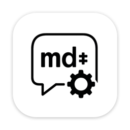

GitHub Repository: https://github.com/Sector-F-Labs/md-chat
MD-Chat
A lightweight, fast desktop client for experimenting with OpenAI-compatible APIs. Built with egui for native performance and CommonMark support.
Features
- Fast native performance with egui
- Full Markdown rendering support
- Light/Dark mode toggle
- Persistent window position
- Compatible with OpenAI and similar APIs (like Reservoir)
- Clean, minimal interface


Configuration
MD-Chat uses a TOML config file for settings such as your OpenAI API key and API URL. Environment variables are no longer required.
Config File Location
- macOS:
~/Library/Application Support/MD-Chat/config.toml - Linux:
~/.config/MD-Chat/config.toml
The config file is created automatically on first run if it does not exist.
Example config.toml
openai_api_key = "sk-...yourkey..."
api_url = "https://api.openai.com/v1/chat/completions"
- If
openai_api_keyis missing or empty, requests will fail unless the API does not require a key. - You can edit this file to change your API key or use a different API URL.
Building and Running
# Build the application
cargo build --release
# Run the application
cargo run --release
Usage
- Launch the application
- Type your message in the input box
- Press Enter or click Send to submit
- View the markdown-formatted response
Modal Editing & Vim-like Navigation
MD-Chat supports modal editing inspired by vim, making keyboard navigation fast and efficient:
-
Modes:
- INSERT: Type and edit your message as usual. Press
Escto enter NORMAL mode. - NORMAL: Keyboard navigation and commands. Press
ior click the input box to return to INSERT mode.
- INSERT: Type and edit your message as usual. Press
-
Navigation in NORMAL mode:
j/k: Scroll down/up by a small amountShift+j/Shift+k: Scroll down/up by one window heightg: Jump to the topG: Jump to the bottomr: Refresh chat history
-
Other:
- The current mode is shown in the top right, styled like vim.
- The input box is always interactive; clicking it in NORMAL mode returns you to INSERT mode.
This makes MD-Chat a joy to use for keyboard-centric users and fans of modal editing!
Development
The codebase is organized into two main components:
src/main.rs: UI and application logicsrc/openai.rs: API client implementation
Dependencies
- eframe: Egui framework for native applications
- egui_commonmark: Markdown rendering support
- reqwest: HTTP client
- tokio: Async runtime
- serde: Serialization/deserialization
License
Licensed under the BSD 3-Clause License. See the LICENSE file for details.